食事のバランスや運動に加えて。
PR ダイドードリンコ株式会社
ある朝…
あれ、
きつい。
前は、
すんなり
締まった
のに。
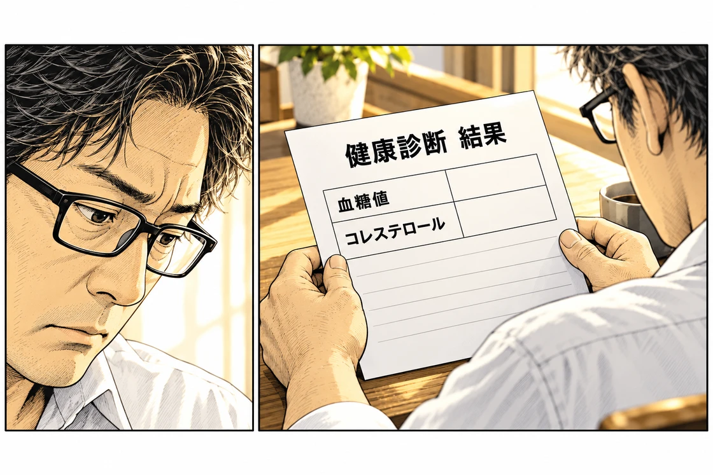
お腹だけの話じゃ、
ないのか。
昼休み。
でも、今朝の結果も
気になるんだよな。
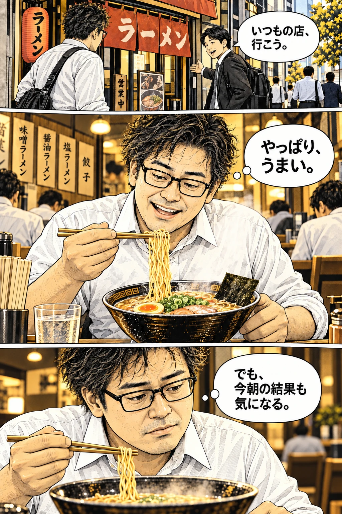
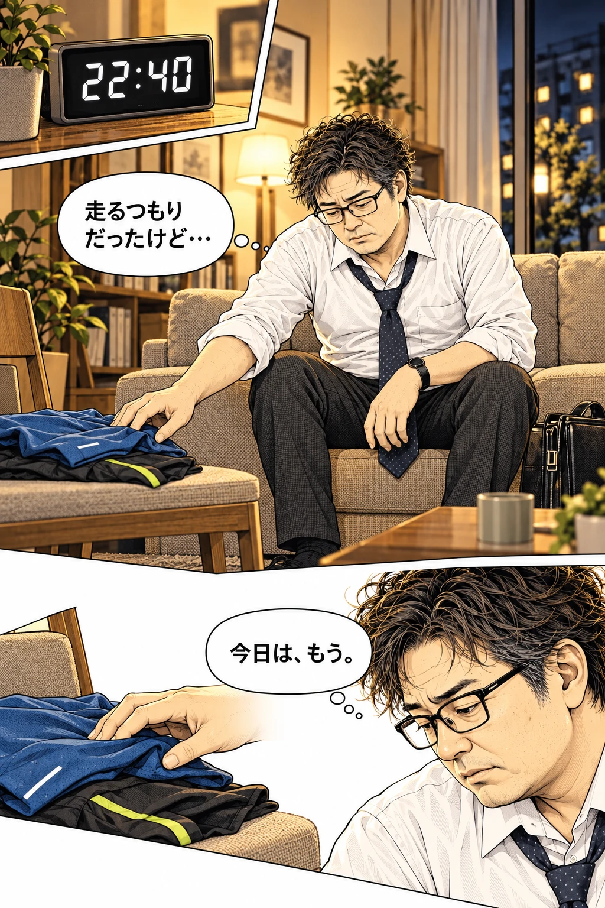
翌朝、食卓で。
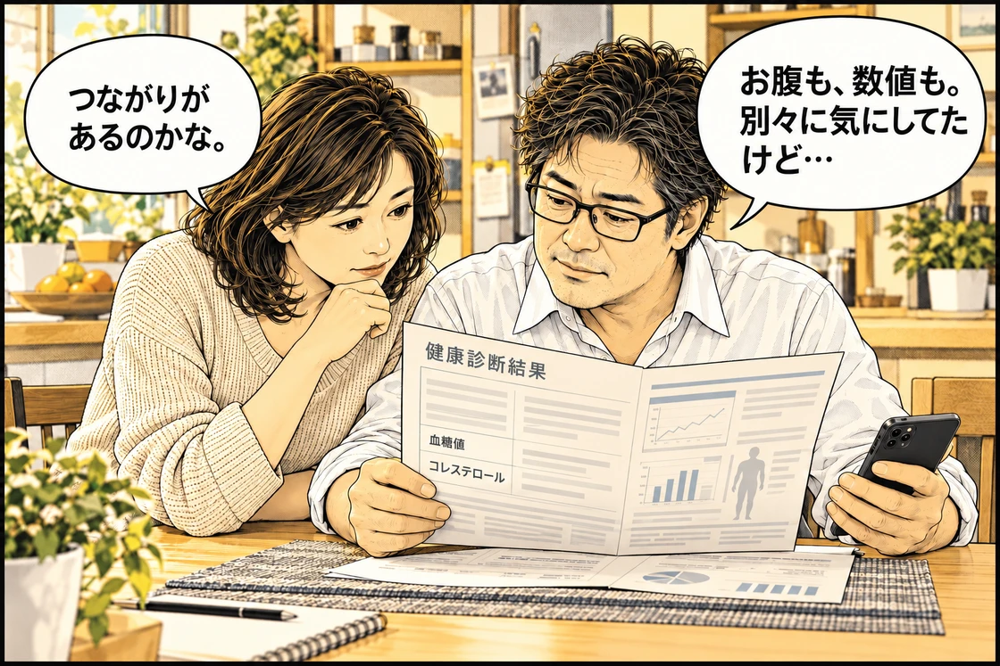
調べてみると…
食後に増えた糖を、細胞へ取り込むのを助けるのがインスリン。
摂りすぎが続くと、
脂肪もたまりやすく。
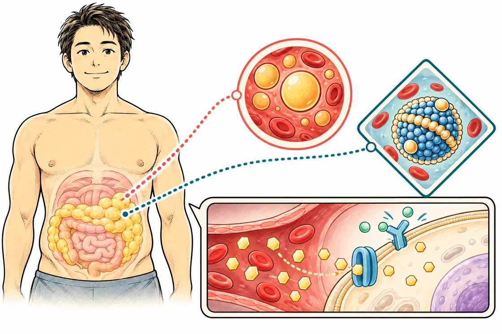
中性脂肪コレステロール糖内臓脂肪の蓄積は、血液中の脂質の乱れとも関係しています。
糖の取り込みを助けるインスリン。この働きが弱くなると、血糖値も下がりにくくなります。
気になる3つに、
その一杯に、3つの機能。
いつものコーヒーを、
スマートブラックに。
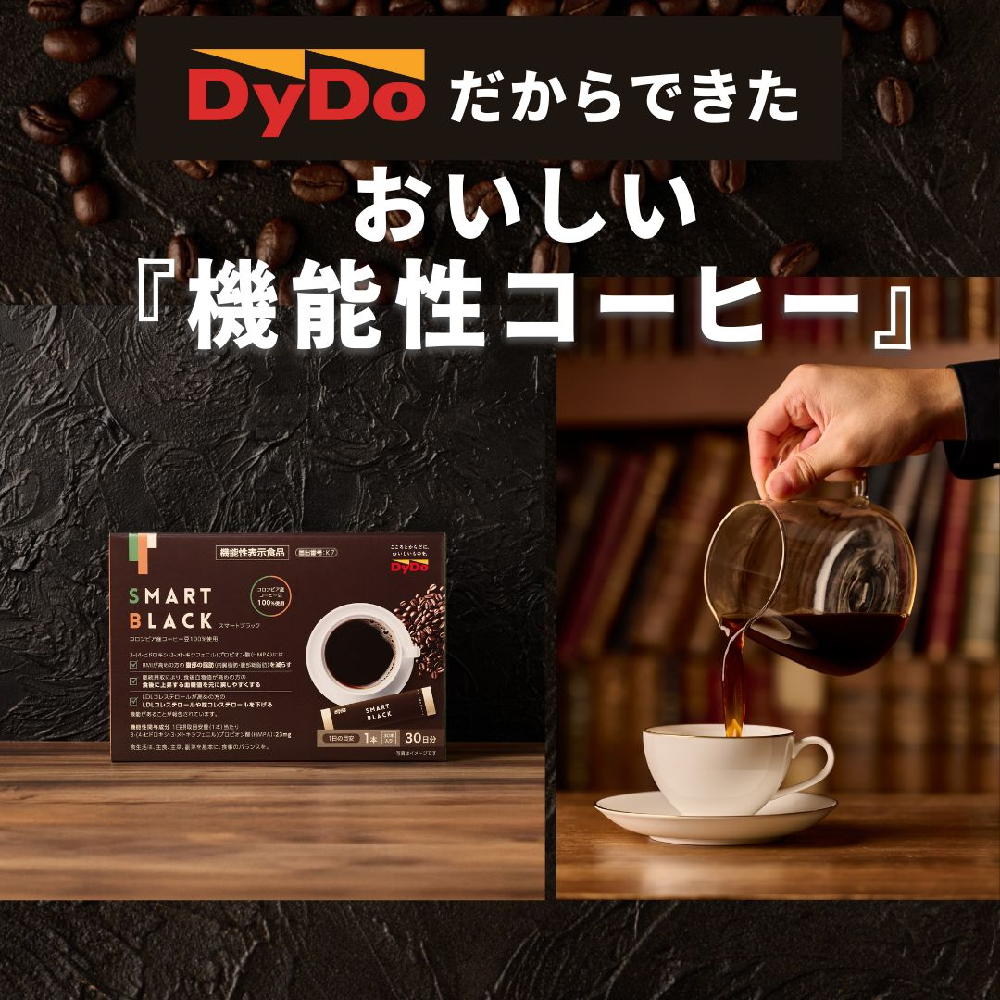
配合したのは、
機能性関与成分 HMPA。

※3-(4-ヒドロキシ-3-メトキシフェニル)プロピオン酸（HMPA）の研究報告。対象となる方や機能は上記をご確認ください。
「コーヒーで？」と思いますよね。
注目したいのは、
成分の研究報告。
ポリフェノールから体内で作られる成分のひとつ、HMPA。スマートブラックは、そのHMPAを直接摂れるコーヒーです。
HMPAについては、腹部の脂肪やウエスト周囲径、食後の血糖値、コレステロールに関する機能が報告されています。
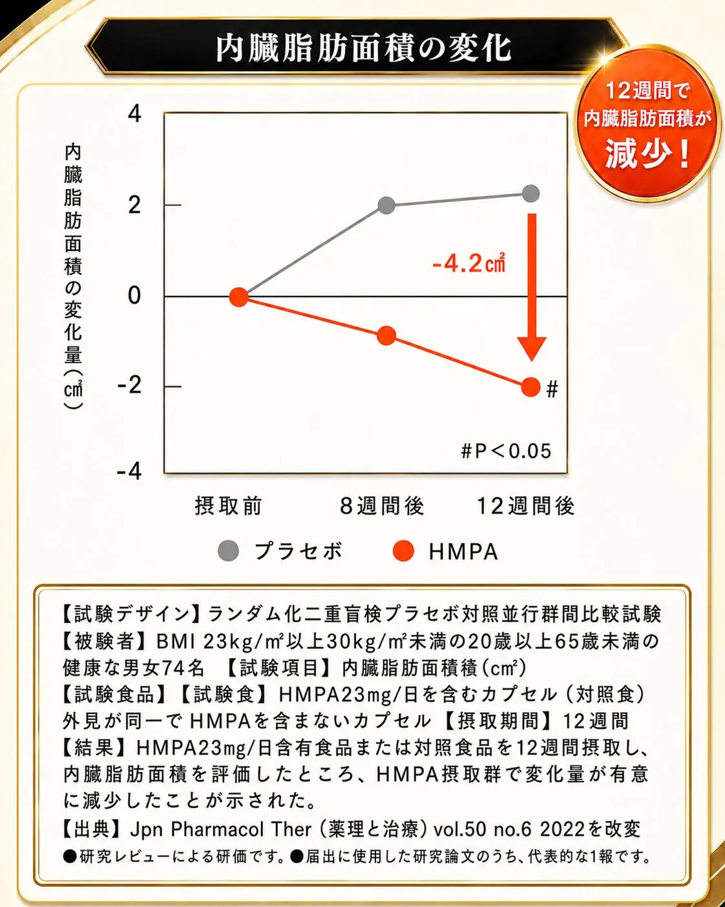
掲載図はHMPAを含むカプセルを用いた研究報告です。スマートブラックそのものを用いた試験ではありません。機能性関与成分に関する研究レビューにより評価されており、代表的な研究1報を提示しています。
ほかの研究結果も見る
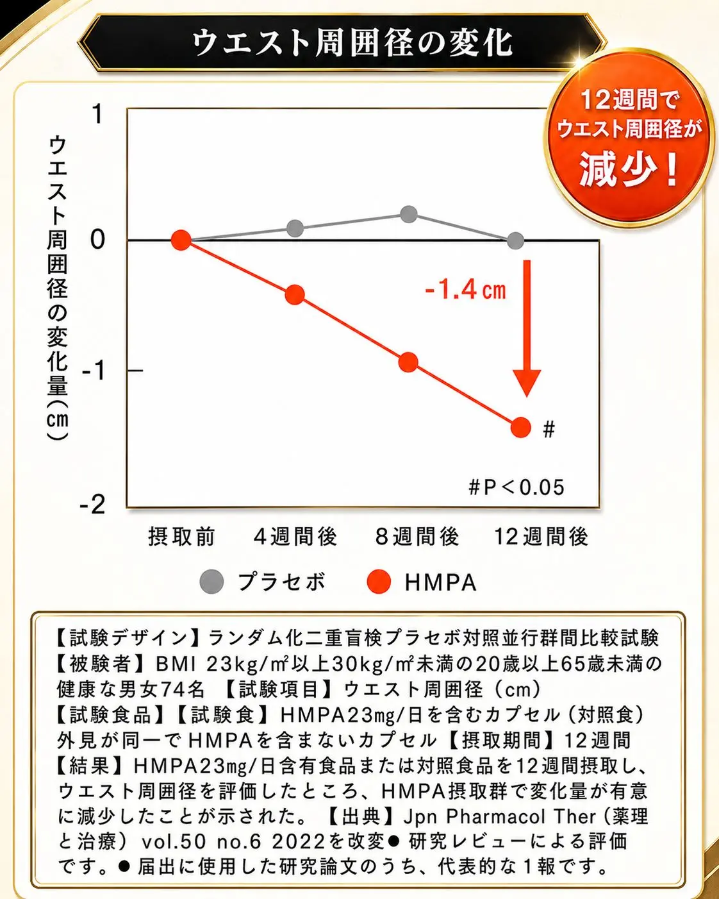
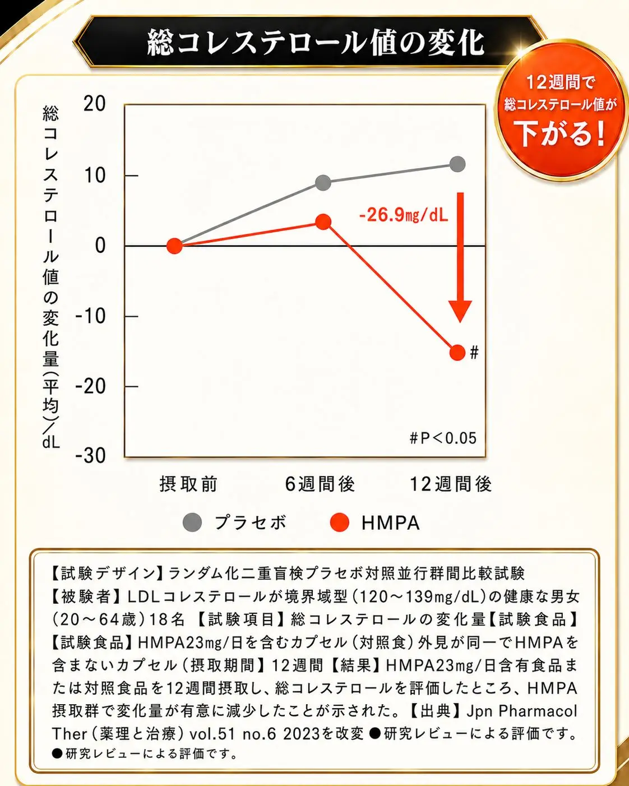
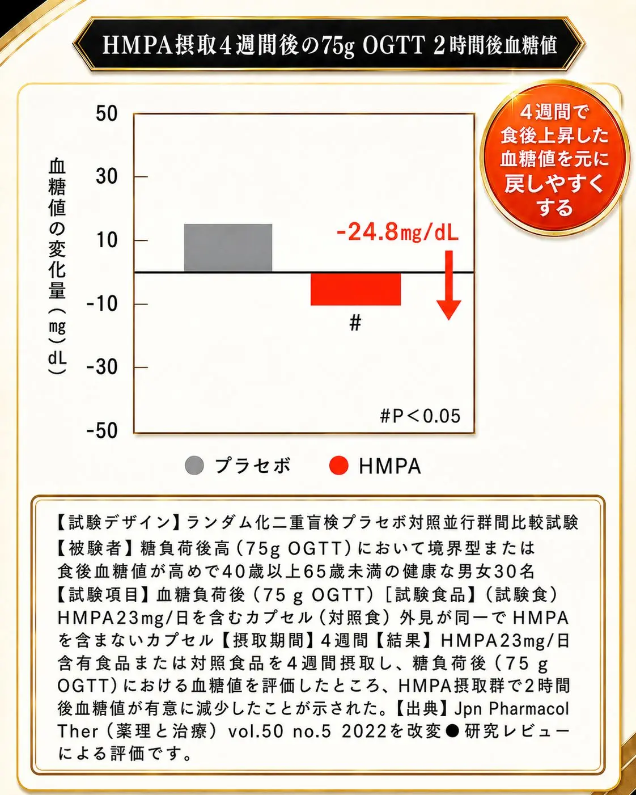
※適切な食事制限と運動の併用が必要です。食生活は、主食、主菜、副菜を基本に、食事のバランスを。
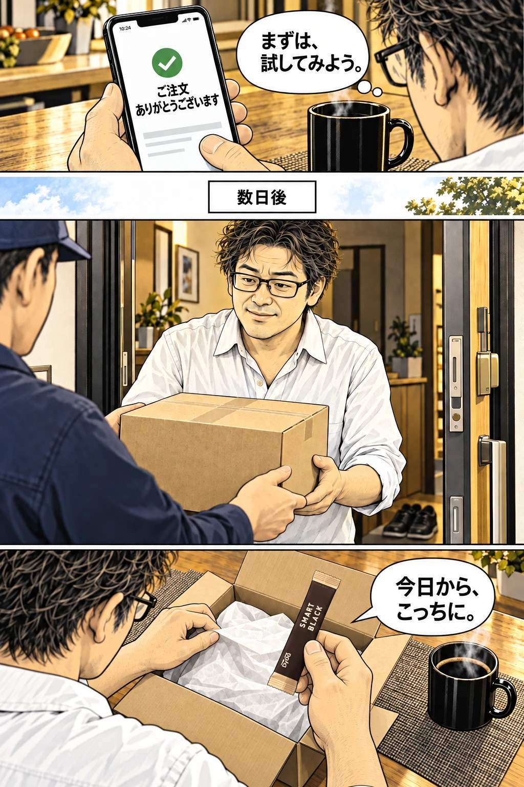
毎日飲むものだから。
機能だけじゃ、
続けたくならない。
スマートブラックは、スッキリとした飲みやすさにもこだわった一杯。ダイドードリンコが、毎日無理なく続けられる味を追求しました。
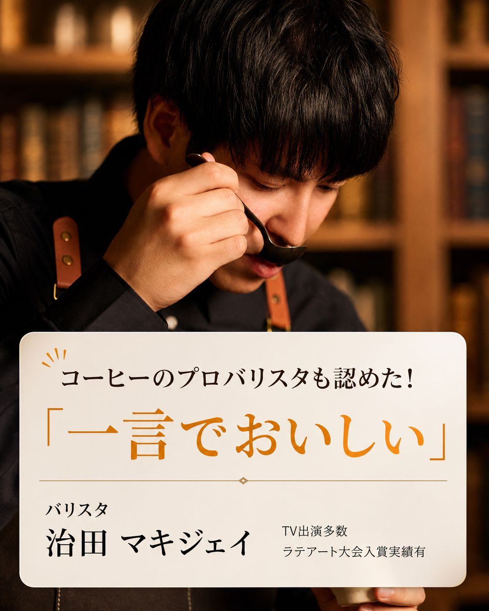
ホットでも、アイスでも。
スティック1本を溶かすだけ。

※映像は飲用イメージです。1日摂取目安量は1本です。
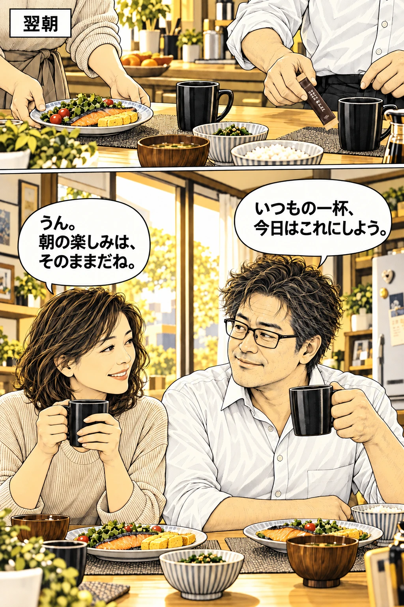
初めての方へ
始めるなら、
この特別価格で。
 定期初回 3,240円で試す公式サイトで内容を確認する →
定期初回 3,240円で試す公式サイトで内容を確認する →毎月お届けする定期コースです。初回3,240円（税込）、2回目以降は5,832円（税込）。送料無料。初めての方お一人様1箱限り。最低購入回数のお約束はありません。
休止・中止は、次回お届け予定日の7日前までに0120-606-909（平日9:00〜18:00）へご連絡ください。
あなたは、
どこが気になりましたか？
3問のかんたんアンケート